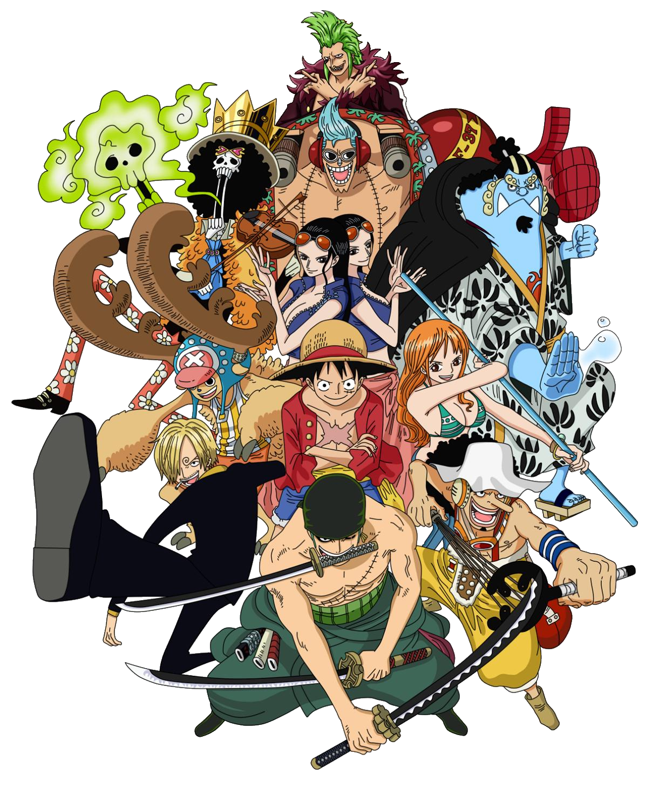

<nav class="navbar navbar-expand-lg p-0">
  <div class="container-fluid py-0 my-0">
    <button
      (click)="show = !show"
      class="navbar-toggler" type="button" style="border-color: white;" aria-controls="navbarSupportedContent" aria-expanded="false" aria-label="Toggle navigation">
      <span class="navbar-toggler-icon" style="background-image: url('data:image/svg+xml,%3Csvg xmlns=%22http://www.w3.org/2000/svg%22 width=%2230%22 height=%2230%22 viewBox=%220 0 30 30%22%3E%3Cpath stroke=%22rgba(255, 255, 255, 1)%22 stroke-width=%222%22 stroke-linecap=%22round%22 stroke-miterlimit=%2210%22 d=%22M4 7h22M4 15h22M4 23h22%22/%3E%3C/svg%3E');"></span>
    </button>
    <div class="collapse navbar-collapse my-5 " [ngClass]="{'show': show}">
      <ul class="navbar-nav me-auto mb-2 mb-lg-0 mx-auto">
        <li class="nav-item">
          <button class="btn mx-5" routerLink="" routerLinkActive="active" [routerLinkActiveOptions]="{ exact: true }">
            <h1 class="mt-2">Home</h1>
          </button>
        </li>
        <li *ngIf="!isLoggedIn" class="nav-item">
          <button class="btn mx-5" routerLink="/auth/register" routerLinkActive="active" [routerLinkActiveOptions]="{ exact: true }">
            <h2 class="mt-2">Unisciti alla ciurma</h2>
          </button>
        </li>
        <li *ngIf="!isLoggedIn" class="nav-item">
          <button class="btn mx-5" routerLink="/auth/login" routerLinkActive="active" [routerLinkActiveOptions]="{ exact: true }">
            <h2 class="mt-2">Login</h2>
          </button>
        </li>
        <li *ngIf="isLoggedIn" class="nav-item">
          <a class="nav-link" routerLink="/dashboard">Dashboard</a>
        </li>
        <li *ngIf="isLoggedIn" class="nav-item">
          <button (click)="logout()" class="nav-link">Logout</button>
        </li>
      </ul>
    </div>
  </div>
</nav>
